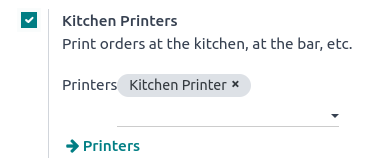

Impresión de órdenes¶
Integrar impresoras en el flujo de trabajo de un restaurante o bar puede mejorar la comunicación y colaboración entre los equipos frente y tras mostrador, lo que lleva a un servicio más ágil y eficiente.
Configuración¶
Habilitar y crear impresiones¶
Para habilitar el envío de órdenes a una impresora en la cocina o bar, vaya a , baje a la sección Restaurante y bar y habilite la función impresoras de cocina. Escriba un nombre para la impresora en el campo impresoras y haga clic en crear y editar… para abrir un formulario de configuración.
Para obtener una lista de todas las impresoras que se han creado o para modificar una impresora existente, haga clic en –> Impresoras y seleccione la impresora que desea editar para abrir su formulario de configuración.
Formulario de configuración¶
En el formulario de configuración, seleccione el tipo de impresora según su instalación:
Si su impresora está conectada a una caja IoT, seleccione utilizar una impresora conectada a la caja IoT y seleccione el dispositivo en el campo dispositivo IoT.
Si utiliza una impresora Epson que no necesita una caja IoT, seleccione use una impresora Epson e introduzca la dirección IP de la impresora en el campo dirección IP de la impresora Epson.
Ver también
Configure su impresora para imprimir productos específicos según su categoría de PdV. Para hacerlo, haga clic en agregar una línea en el campo categorías de producto imprimidas. Si deja este campo en blanco, todos los productos se envían a la impresora sin importar su categoría de PdV.

Imprimir órdenes¶
En una sesión abierta, empiece a tomar órdenes y haga clic en ordenar para enviarla al bar o la cocina.

Nota
Cuando se pueden imprimir productos, estos aparecen en color verde en el carrito, y el botón «ordenar» también cambia a verde.